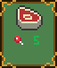
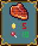

How to Play
In Solivern you have two hands of cards: the first one is your main hand and the second one is your quest cards you can assign patrons to.
Main Hand Card Types:
Buff (Green) : These will grant you resources once you pass your turn. They cannot be activated and are automatically used when the turn ends. Notice these cards will have an icon of what resource it will add and how much.

Curse (Purple) : These will take resources from you once you pass your turn. They cannot be activated and are automatically used when the turn ends. Notice these cards will have an icon of what resource it will remove and how much.
Resource (Blue) : These cards will allow you to exchange resources for one type to another. You have to activate these to make the purchase and exchange the resources. Notice that these cards will have an icon of what resource they will lower (red text) and what resource they will provide (green text).

Object (Grey) : These cards will allow you to place stationary objects in your tavern that cost resources, but they have a range that increases satisfaction of your patrons. Notice the cost that shows the resource icon it costs, the green range square that shows the radius that it affects on the tavern board, and the heart that shows how much satisfaction it will increase.
Quest Card Types:
Quest (Tan) : These are quests that you can assign your patrons to go on and earn you extra resources.
The cards will always show the amount of turns it takes to complete the quest, resource icon(s) that the quest will give if successfully completed, and the stat requirement for the quest where the numbers between the stat name indicate the required range to complete the quest.
Once the turns are up on the quest a random modifier is computed to find a number between that stat range and see if the patron's stat is higher and if it is the patron goes back onto the board and gets stronger.
Item (Orange) : These are items that your patrons can acquire by completing quests. They will give extra stats and resource gains to your patron.
Patron Card Types:
Patron (Red) : You can't have a tavern without customers.
These cards have resource icons that indicate how much the patron takes (red text) and how much the give you (green text) between turns.
The heart icon indicates how much satisfaction they need in order to stay.
If you don't meet their resource upkeep requirements or don't have objects around them to meet their satisfaction then they will leave you tavern, so make sure to keep them happy!
Patrons also have combat stats indicated in a box next to the card that states their level, intelligence, strength and dexterity - the higher these stats the better and better equipped they will be at fighting and completing the quests (complete a quest to get your patron to the next level and make him stonger).
Speaking of fighting, patrons that are adjacent to another patron have a chance inbetween turns to get into a fight; the winner will gain a level, but the loser will be removed from the tavern.